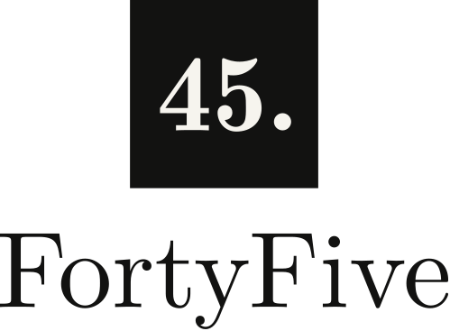
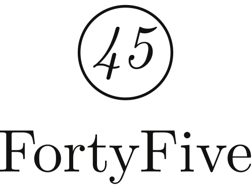
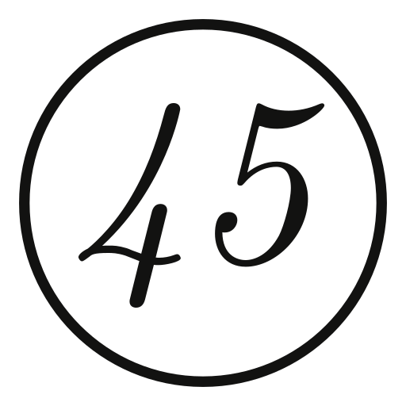
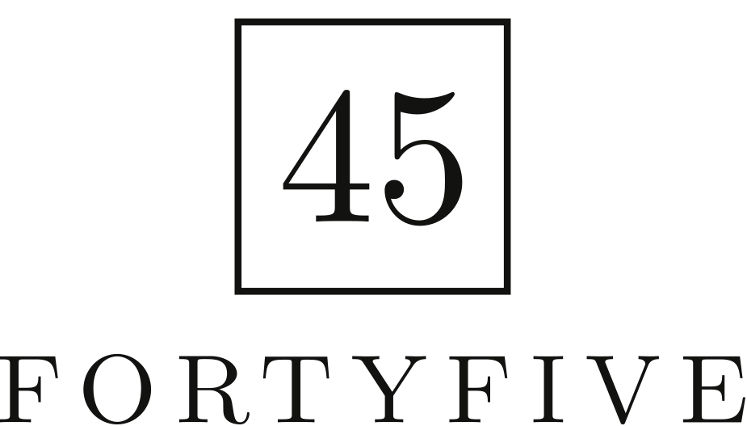
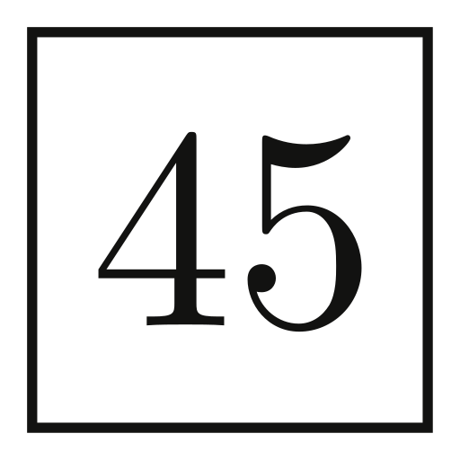

FortyFive logo options
Three formal, typographic directions, all set in Latin Modern (the font of the deck and every PDF) and outlined, so they never depend on a font being installed. Each is shown large, reversed, stacked, at favicon sizes, as an app icon and in a website header at real size. The recommended one, direction 1, is exported in full in brand/final.
1. The full stop
"45." in bold numerals on an ink square. The full stop is the idea: 45, full stop. Nothing else. It matches the line "Mastering the IB Diploma. Nothing else." and the tile already used in the deck and the dashboard.


 FortyFive: Mastering the IB
FortyFive: Mastering the IB2. The examiner's ring
An italic 45 inside a ring, the way an examiner circles the total at the top of a marked script. Warmer and more personal; thin lines need care at tiny sizes.


3. The title page
FORTYFIVE in spaced capitals with the 45 in a ruled box, like the total box on an exam paper. The most formal and institutional, like a university press.

